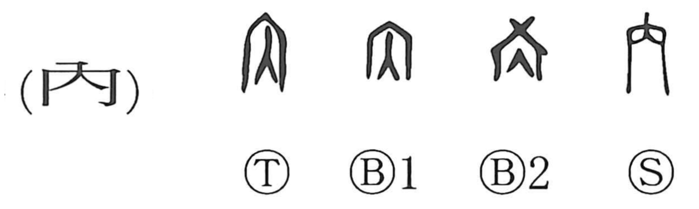

内

Kun: uchi | On: nai, dai
inside ・ interior ・ inner
Explanation
内 pictures the entrance of a building. Bronze forms preserve the roofed opening, identifying the place through which one passes into the interior. Its primary function is to name the inside, even though early texts can also use it for entering.
Investiture accounts sometimes write ‘enter the gate’ with 内 where 入 would be expected. The two words share this crossing of the threshold, while 内 tends toward the place and 入 toward the movement.
From the space within a house come home, one's household, and people close to it. The inward place can also be the heart or private thought. Thus physical interior, personal circle, and inner feeling extend the same relation between an outside and what is enclosed.